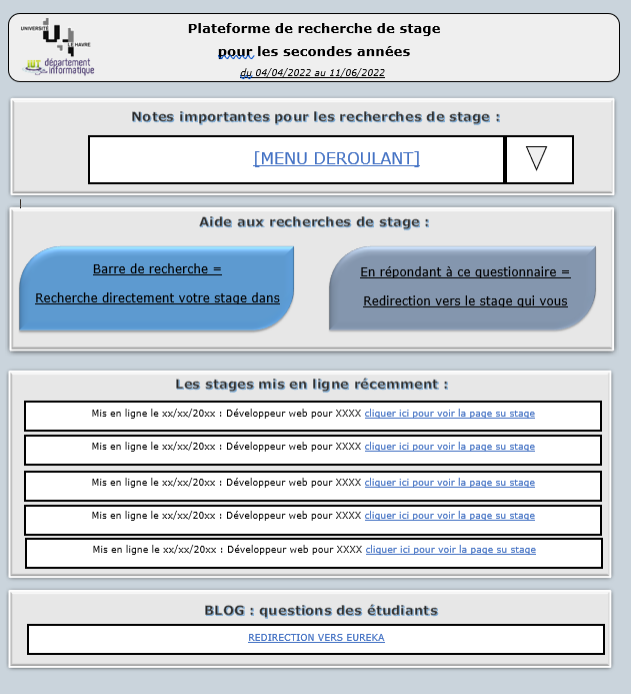
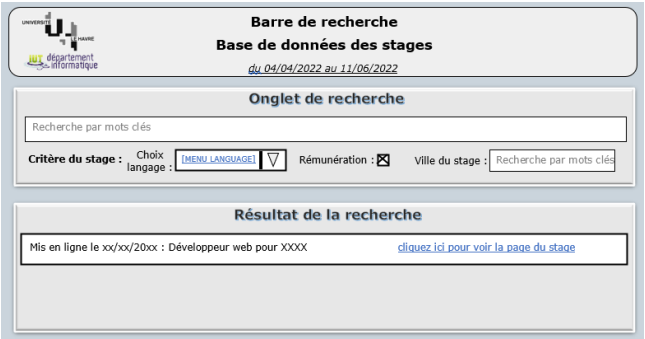

Dans cette SAE nous avons du avec notre groupe, proposé une maquette pour une nouvelle page de présentation des stage pour les seconde année
Seul la maquette nous à était demander est non un site.
Pour ma part j'ai réalisé la plus part des tache du travail qui était l'entretien avec le client, les prémice de la maquette et ça réalisation final
Avec notre groupe, il nous a fallu travail pour Toxeval une entreprise de produit chimique, nous avons fait avec notre equipe des diagramme de gantt, PERT et MPM
Ayant de gros probleme de compréension, j'ai pu était que très peu utile à mon groupe, j'ai quand meme réussi à fournir un travailler pour géré au mieux l'organisation du travail de mon équipe
Je suis fier de dire que j'ai acquis cette composante haut la main, étant un grand créatif j'ai était utile à mon équipe pour la réalisation de la maquette sur site web


A ma plus grand deception, j'aurai bien aimé voir un peu plus de droit au tour de l'informatique étant currieux je m'y connais un peu mais je ne pourrai que prouvé cette compétence avec une chaine que je connseil ici
Pour la SAE 105, étant le chef de l'equipe, j'ai eu pour le role de récupéré tout en réalisent le pdf du rendu final
lien vers le pdf